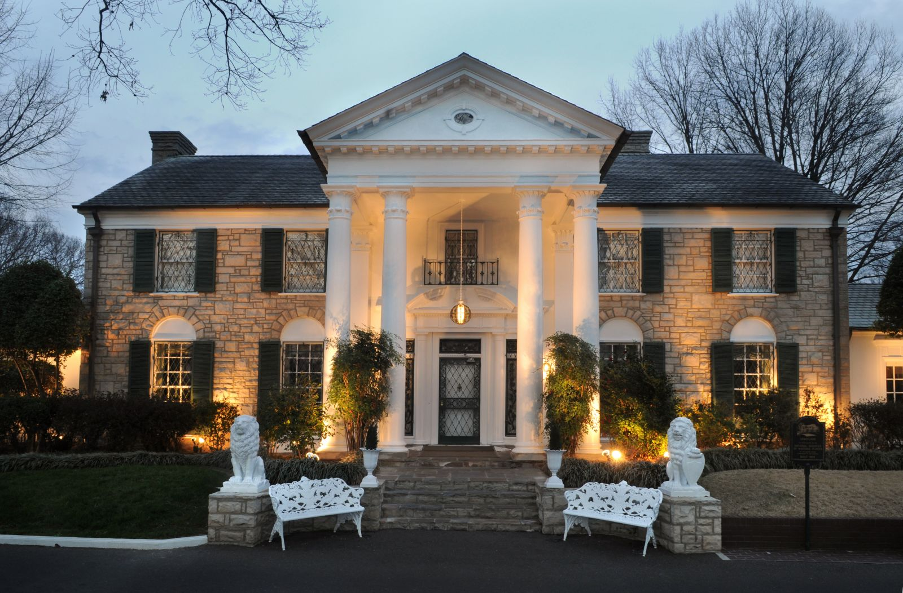

Graceland

Few people are as iconic in the music world as Elvis Presley. Elvis was so famous that even after his death, his home remains a popular and iconic tourist attraction today. Graceland is a beautiful home in its own right featuring a strong Colonial Revival style. The house is often visited by Elvis enthusiasts who make the pilgrimage to his famous house to pay homage to the King of Rock and Roll. The house has 23 rooms sprawling over 17,552 square feet. Graceland is located outside of Memphis, Tennessee, and is a staple of the region.
History
Graceland was once part of a 500-acre farm that was owned by the S.C. Toof family. The land had been part of the family for generations and was named after one of the female relatives, Grace. According to Graceland history, in 1939, Grace's niece, Ruth Brown Moore and her husband, Dr. Thomas Moore, built the mansion, which became well-known to the locals of Memphis. The Moore's daughter, Ruth Marie, was musically accomplished and became a harpist with the Memphis Symphony Orchestra. Classical recitals in the front formal rooms were common, just as rock 'n' roll and gospel jam sessions would be after the next owner moved in.
House guests at Graceland included family members and friends at various times - some in the mansion proper and some in residential accommodations elsewhere on the grounds. And although Elvis had various homes in the Los Angeles area and spent a great deal of time on the road with his concerts, Graceland was always home base - a constant in the life of Elvis Presley.